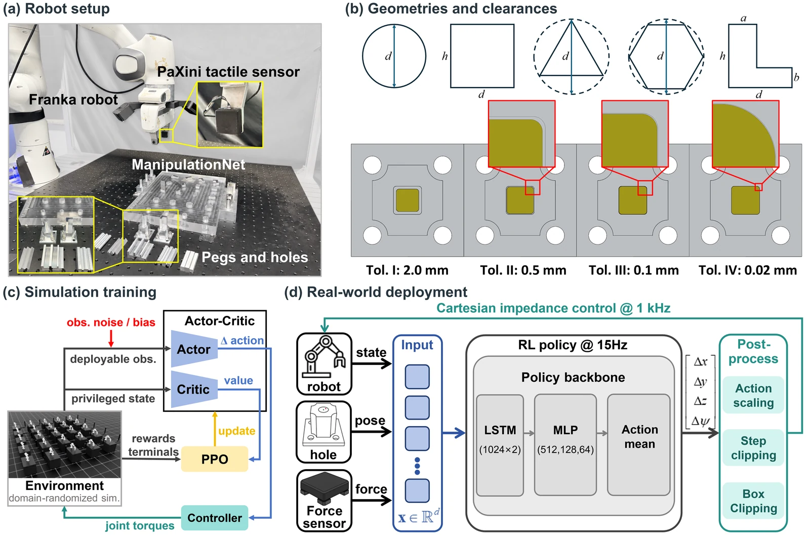
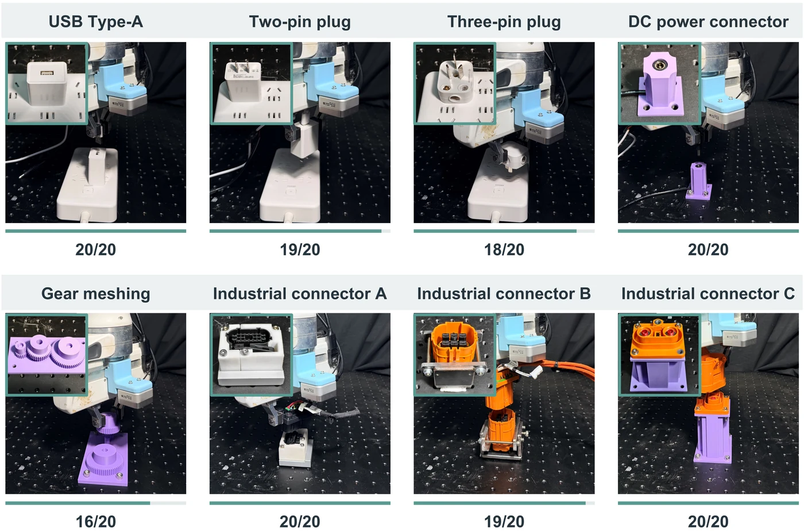
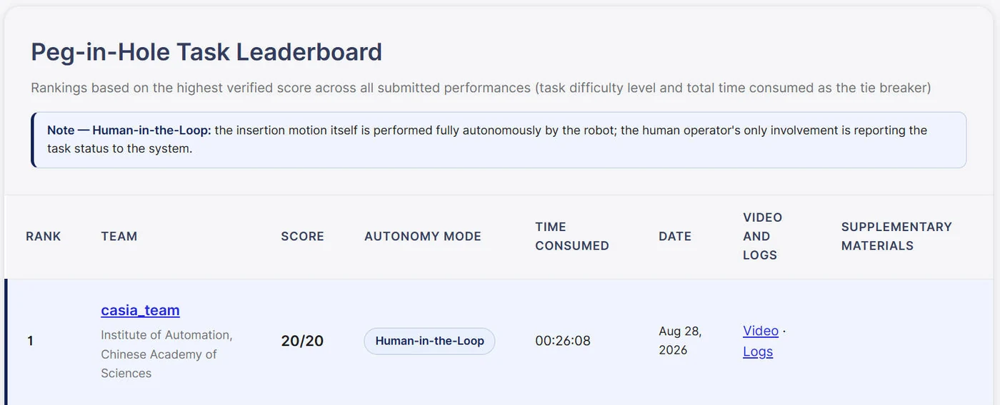
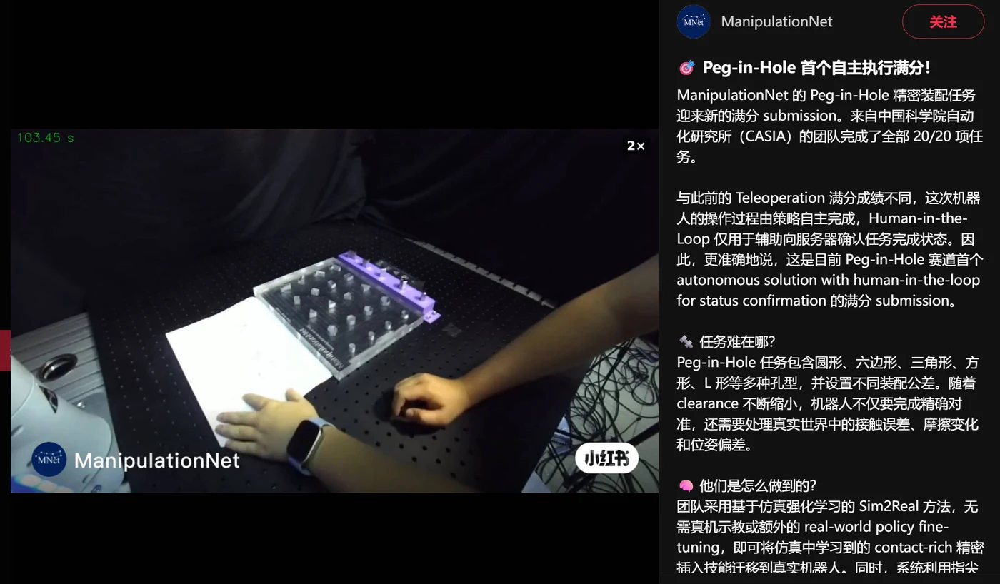

Simulation-only training
Parallel contact simulation exposes the policy to pose and dynamics uncertainty before deployment.
Contact-rich robotic manipulation
a University of Chinese Academy of Sciencesb Institute of Automation, Chinese Academy of Sciencesc PaXini AI Technology (Beijing) Co., Ltd.* Corresponding authors
Supplementary Video 1. Simulation-trained precision insertion and real-robot demonstrations.
Abstract
Precision insertion requires a robot to combine nominal geometry with contact information when small pose errors can cause jamming or excessive force. InsertAnything develops a simulation-only reinforcement learning framework that combines target poses with compact three-dimensional fingertip force feedback, enabling direct transfer to real robots without real-world demonstrations or policy fine-tuning. A decoupled gated reward coordinates alignment and insertion, while force-signal smoothing and state-independent exploration improve training stability and contact-aware motion correction. The resulting policy generalizes across clearances and geometries, achieves a 20/20 completion rate on ManipulationNet under its Human-in-the-Loop protocol, and reaches 95.0% success across eight unseen real-world insertion tasks.
01 · Method
Target poses provide a nominal reference; fingertip force feedback supplies the local information needed to correct contact.

Parallel contact simulation exposes the policy to pose and dynamics uncertainty before deployment.
Three-dimensional fingertip force feedback reveals contact states that a nominal pose cannot distinguish.
The same observation and control interface is used in simulation and on a Franka Emika robot with a PaXini tactile sensor.
02 · Contributions
A force-guided precision insertion framework combines nominal target poses with compact three-dimensional fingertip force feedback for direct deployment without real-world demonstrations or policy fine-tuning.
A decoupled gated reward and stabilized force-feedback learning scheme improve alignment, insertion, robustness to localization errors, and contact-force regulation.
Extensive evaluations cover clearances, geometries, unseen real-world insertion tasks, and the first perfect 20/20 ManipulationNet result under its Human-in-the-Loop protocol.
03 · Results

04 · Real-robot demonstrations
The clips highlight force-guided correction, tight-clearance insertion, continuous benchmark execution, and transfer to unseen industrial interfaces.
Pose-error correction with and without fingertip force feedback.
Four tight-clearance peg-in-hole geometries.
Continuous autonomous execution across the benchmark sequence.
Eight real-world tasks completed by one simulation-trained policy.
05 · External recognition
The benchmark uses a standardized physical setup, while its Human-in-the-Loop protocol limits human involvement to reporting task status. The public leaderboard and official announcement provide an external record of the result.


Citation
InsertAnything: Generalizable Contact-Rich Precision Insertion from Simulation to Reality